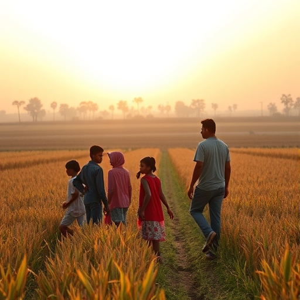

Youth migration from rural to urban areas, away from farming, has
become a pressing issue in many developing countries. This phenomenon poses serious challenges
to agricultural sustainability, rural economies, and food security. Let’s explore the causes,
impacts, and potential solutions to this issue in depth.

Causes Of The Problem
1. Lack of Economic Opportunities
In many regions, farming does not provide sufficient
financial returns. With rising costs of farming inputs, unpredictable weather, and
limited access to modern technologies, many young people find farming unprofitable.
Urban areas, with their thriving industries and better-paying jobs, seem like more
appealing options.
2. Limited Access to Land
Youth often face difficulties in inheriting or accessing
land due to complex land ownership structures, land fragmentation, or legal barriers.
Without secure land tenure, young people are less likely to invest in farming.
3. Outdated Farming Practices
Many rural areas still rely on traditional,
labor-intensive farming techniques that are less efficient and harder to modernize. This
can discourage youth from pursuing agriculture, especially when they see more advanced
industries in cities.
The Solution
1.Promote Agricultural Modernization
Introducing modern farming technologies such as
precision farming, drones, and automated irrigation systems can make farming more
productive and profitable. Youth are more likely to stay in agriculture if they can
work with new, exciting tools that increase efficiency.
2. Improve Access to Land
Governments can implement land reforms that
facilitate easier access to land for young farmers. This can include creating
affordable land leasing schemes or programs that allow youth to buy or inherit land.
3.Create Rural Development Opportunities
Better roads, electricity, internet access, and
healthcare can make rural areas more attractive to the youth. When the quality of
life improves, young people are more likely to stay in rural areas.
The Conclution
Youth migration from farming is a complex issue driven by
economic, social, and environmental factors. Young people are drawn to urban areas in
search of better opportunities, higher incomes, and a more appealing lifestyle, leaving
rural communities to face labor shortages, economic decline, and cultural erosion.
However, by addressing the root causes, we can make agriculture a more attractive and
viable career choice for young people.